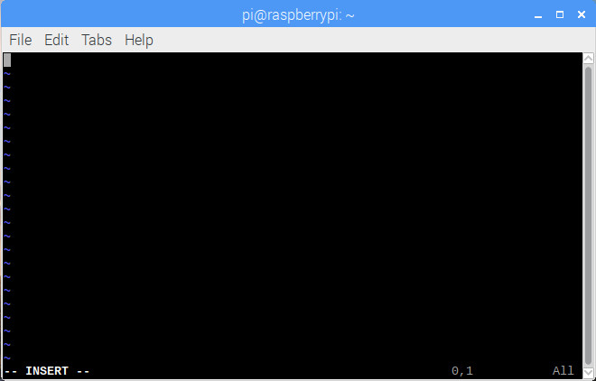
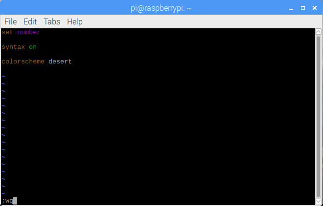
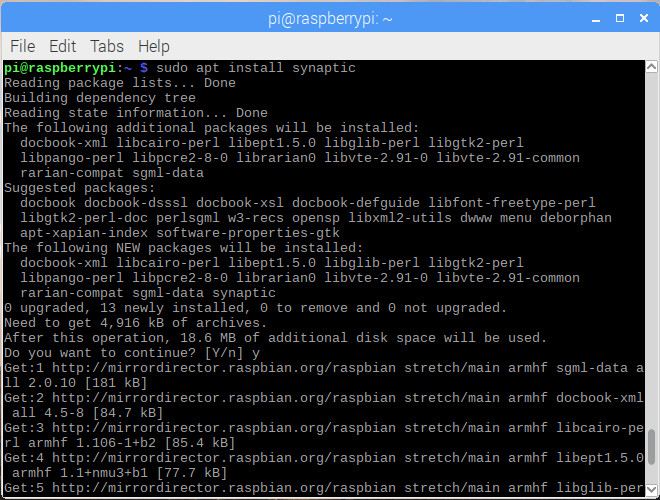
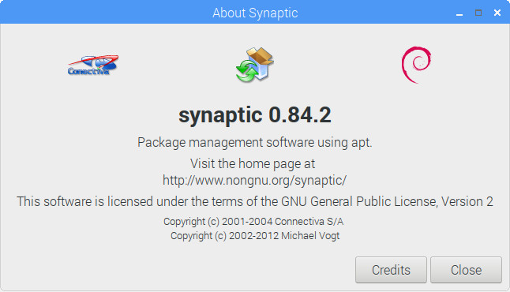
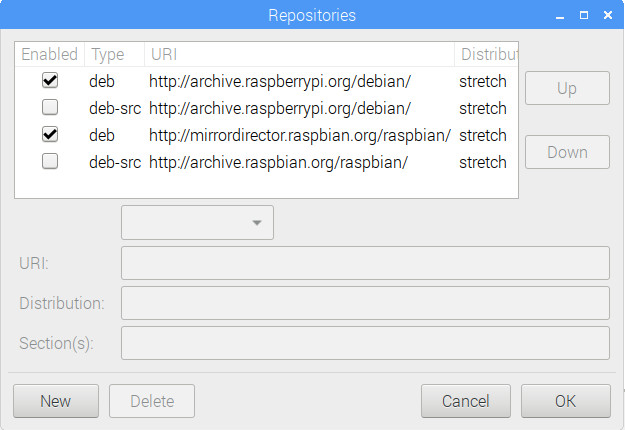

2.1 Package and Repository Management
We FIRST install some recommended packages, such as, vim, synaptic, etc.
2.1.1 Commands for Package Management
sudo apt install packagename: for FIRST time installationsudo apt upgrade packagename: for upgrading an already-installed packagesudo apt remove packagename: for uninstalling an already-installed package
2.1.2 Vim
Every Linux user might have known two popular text-mode editor: nano and vi. Functionally speaking, vim is a superset of vi but with more convenient hot keys to edit. Let's install it and test it out.
sudo apt install vim

After the installation, let's create a new hidden file .vimrc under folder ~, which is a configuration file for vim.
Bash command vim .vimrc, then press i to change into the Insert mode, as follows:

Then, type in the following 3 lines to enable the style whenever vim editor is opened, then type in :wq to save and quit.

Type command cat .vimrc to make sure the content has been correctly typed into the file .vimrc.

And finally, we can open the file .vimrc by vim again, and you will be able to see the line number in the editor by default.

Throughout Raspberry Pi Full Stack, for text-mode editing, we use vim instead of nano.
2.1.3 gedit
gedit, another editor but in graphic-mode, is strongly recommended to install:
sudo apt install gedit.
2.1.3 Synaptic
Synaptic is a GUI based application to easily manage packages. We FIRST install it and have a look at what Synaptic is?
sudo apt install synaptic

After installation, you will see Synaptic is installed under system Preferences.

Click on Synaptic Package Manager, you will see the following Synaptic view.

Click on Help then About, you will be able to see the following About Synaptic Dialog.

2.1.4 Change Repositories
Repository is where to store system-compatible software packages. Since there are a lot of mirrors over the world, some are just inside your country, some are closer to you, and some are just down without response, so that when you download software packages,you will notice an obvious speed difference by choosing different repositories. Those reasons are WHY some times we prefer specifying a STABLE and FASTER repository. Often, the repository to be selected is CLOSER to where the Raspberry Pi is.
- By Synaptic Open Synaptic, then click on Settings, you will be able to see the submenu named Repositories. Click on it, and you will see the current existing and ticked repository URLs.

You can of course NEW some repositories, which you can find by GOOGLE. For NOW, just remember what have been ticked, and compare them to the content in file /etc/apt/sources.list and directory /etc/apt/sources.list.d/.

Clearly, Synaptic Repositories just contains exactly the SAME content as in file /etc/apt/sources.list and the files under directory /etc/apt/sources.list.d/.